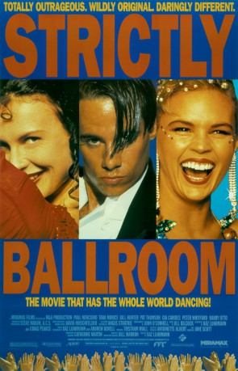
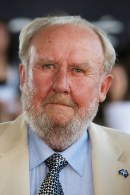

#2764 Strictly Ballroom - Die gegen die Regeln tanzen
Auszeichnungen: 3 BAFTA-Awards gewonnen
 
 IMDB-Wertung: 7.2 / 10
IMDB-Wertung: 7.2 / 10  Metascore: 72
Metascore: 72 
Parkett-Ass Scott bringt Australiens Tanzjuroren auf die Palme: Eigenmächtig ergänzt er die Rumba mit anderen Schrittfolgen. Angesichts der drohenden Sperre streikt auch Scotts Partnerin. Nur die Anfängerin Fran ist bereit, mit Scott gegen die Regeln zu steppen...
Jahr: 1992
Dauer: 94 Minuten
FSK: 0
Land: Australien Studio: Winkler FilmTonspuren: DTS - ,
Untertitel: Deutsch,
Auflösung: 1080p (1920x1080) Größe: 7516 MB
Genre: Drama, Komödie, Liebe
Regisseur:  Baz Luhrmann
Baz Luhrmann
Drehbuch: Baz Luhrmann, Baz Luhrmann, Andrew Bovell, Baz Luhrmann, Craig Pearce
Soundtrack: David Hirschfelder
Darsteller:
- Paul Mercurio als Scott Hastings
- Tara Morice als Fran
-  Bill Hunter als Barry Fife
 Gia Carides als Liz Holt
Gia Carides als Liz Holt Barry Otto als Doug Hastings
Barry Otto als Doug Hastings- John Hannan als Ken Railings
- Pip Mushin als Wayne Burns
- Lara Mulcahy als Natalie
- Pat Thomson als Shirley Hastings
- Peter Whitford als Les Kendall
- Sonia Kruger als Tina Sparkle
- Kris McQuade als Charm Leachman
- Leonie Page als Vanessa Cronin
- Antonio Vargas als Rico
- Armonia Benedito als Ya Ya
- Jack Webster als Terry
- Lauren Hewett als Kylie Hastings
- Steve Grace als Luke
- Paul Bertram als J.J. Silvers, State Finals MC
- Di Emery als Waitress
- Brian M. Logan als Clarey
- Michael Burgess als Merv
- Todd McKenney als Nathan Starkey
- Kerry Shrimpton als Pam Short
- Simone Gage als Dancer at Kendall's Studio
- Bradley Sabott als Dancer at Kendall's Studio
- Ray Mather als Dancer at Kendall's Studio
- Jo Shinta als Dancer at Kendall's Studio
- Peter Lynch als Dancer at Kendall's Studio
- Lee Becchiet als Dancer at Kendall's Studio
- Warren Ring als Try-Out Coach
- Jaja Jamieson als Try-Out Coach
- John O'Connell als Try-Out Coach
- Anita Curtis als Try-Out Girl
- Roxana Vella als Try-Out Girl
- Deanne Curtis als Try-Out Girl
- Ángel García als Toledo Guitarist
- Dene Kermond als New Steps Family
- Genevieve White als New Steps Family
- Lisa Ellis als New Steps Family
- Jacqueline Lendich als New Steps Family
- Bob Adams als New Steps Family
Datei: X:\1992\Strictly Ballroom - Die gegen die Regeln tanzen (1992, FSK0, 1920x1080).mkv seit 14.12.2015
Festplatte: HD 1992-1995
 Es gibt insgesamt 57 Filme in der Gruppe '1992'
Es gibt insgesamt 57 Filme in der Gruppe '1992'